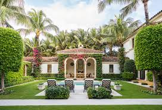
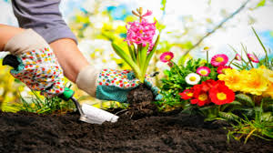
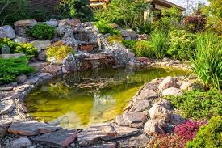
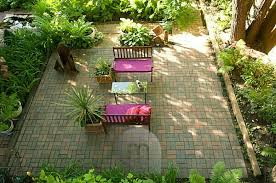
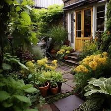

Gardens have been established next to homes since prehistoric times.
most important characteristics of home gardens are their location adjacent to homes,
close association with family activities and a wide diversity of crop and livestock species
to meet family needs. They have played a central role in household security for food, fuel, fibre,
materials and even land ownership, as people changed from an exclusively hunting and gathering
lifestyle and settled in small communities.

The diversity of household needs is reflected in home gardens which can
include staple foods, fruits, vegetables, materials, condiments, stimulants
and medicines. Home gardens are developed for some or all of the following purposes.

In horticulture, "blue" often involves a more lavender or violet-purple hue,
since few plants are truly blue. Even so, these"blues" allow us to appreciate new
plant combinations with fall favorites.

Fall is a welcome respite from summer's heat and humidity,
and it brings us new highlights in the garden as late-season bloomers
open their flowers, berries ripen, and leaves start to change color.
We think of autumn colors as mainly golden yellow, orange, scarlet, burgundy,
and warm brown, but lovers of blue can still enjoy some splashes of color well into fall.

Many herbaceous perennials (those that die back to the ground in winter)
aren't known for showy fall foliage color. There are some exceptions,
though, such as today's feature: Seedbox (Ludwigia alternifolia).
Its leaves often turn scarlet, burgundy, or rosy-red in autumn.